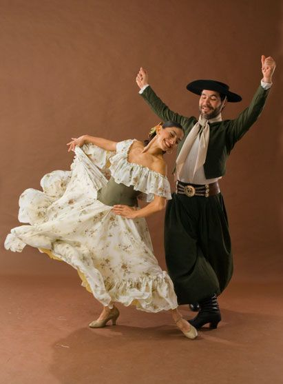
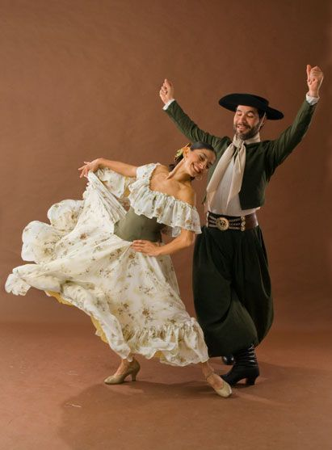

Bienvenidos a Trelew
Trelew, en la provincia de Chubut, Patagonia Argentina, nació a fines del siglo XIX gracias al ferrocarril Central del Chubut y a la llegada de los colonos galeses en 1865. Su nombre significa “Pueblo de Luis”, en honor a Lewis Jones, uno de sus fundadores.
Hoy es un centro cultural y económico importante, famoso por su Museo Paleontológico Egidio Feruglio, la gastronomía galesa y su cercanía a la Península Valdés, Patrimonio Natural de la Humanidad.
 

Videos
A continuación hay tres espacios para videos de YouTube. Reemplace los IDs para mostrar sus propios videos.
Video 1
Video 2
Video 3
Contenido de Climas Durante la semana (Puede variar)
Esta informacion no esta completamente aegura asegurese de verificar la informacion
üìä Datos de clima durante la semana
| Día | Temperatura | Estado | Descripción |
|---|---|---|---|
| Lunes | 25°C | Soleado | Un día ideal para recorrer la ciudad y disfrutar de paseos al aire libre. |
| Martes | 22°C | Nublado | Perfecto para visitar museos o descubrir la gastronomía galesa. |
| Miércoles | 20°C | Lluvioso | Buen momento para probar un té galés acompañado de torta negra. |
| Jueves | 18°C | Ventoso | Se recomienda ropa abrigada; excelente opción conocer el Museo Paleontológico. |
| Viernes | 24°C | Soleado | Ideal para excursiones hacia la Península Valdés y ver fauna marina. |
| Sábado | 27°C | Soleado | Día perfecto para actividades al aire libre y recorridos por la costanera. |
| Domingo | 21°C | Parcialmente nublado | Ambiente tranquilo para caminar por plazas y disfrutar en familia. |